DOT-Design overview
Describe a tool once. Reuse it in different deployments and compositions.
DOT-Design helps you reuse software components in the MARE 6G security ecosystem.
A Dynamic Open Trust component (DOT) describes a tool’s capabilities,
interfaces and deployment alternatives. The dotx CLI validates that definition
and runs the deployment you choose.
DOT-Design at a glance
The diagram introduces the core DOT models and shows how reusable definitions, runtime choices, and compositions relate.

-
DOTs describe reusable tools and their capabilities and interfaces.
-
Runtimes and deployments describe where a tool runs and how it starts.
-
A composition selects at least two Vertices and connects them with at least one Edge carrying a Channel. Each Channel selects a Connector ID at each end. Use
dotx runordotx deployfor one DOT. -
dotxvalidates and operates the selected composition.
A Connector is a provided or required interface defined once by a DOT. A Vertex selects a DOT and a deployment, making all of that DOT’s Connectors available. An Edge joins two Vertices; its Channels select one Connector ID on each side. Service bindings map those interfaces to named ports. Container IDs, addresses, and live status belong to the running deployment, not the portable graph.
Get started
Follow one short path, then explore the areas you need:
-
Quick Start: install
dotxand run Hello World. Success confirms that the CLI can retrieve a DOT and execute it with Docker. -
Run your first composition: connect Node Exporter and Prometheus, verify a scrape, and clean up.
-
Create a composition: make a separate draft from a reviewed example and adapt it to your use case.
Need a prerequisite? The Requirements table links to the official tool installation instructions.
Learn and explore
Use DOTs for Dummies for a conceptual introduction, with no installation required. DOTs in Action is the longer learning path: deploy Prometheus, author a DOT, connect it to Node Exporter, and add Grafana. Each lesson ends with verification and cleanup.
For a focused single-service exercise, use Deploy Prometheus with Docker Compose. For a prepared presentation or an advanced runtime example, choose a guided demo.
Reference
| Guide | Use it for |
|---|---|
Commands, manual installation and diagnostics. |
|
Finding definitions and reusable compositions. |
|
Exact model fields, relationships and constraints. |
|
Connections, configuration, lifecycle and recovery. |
Versions and contribution
Next documents current development. Use the version selector for a released binary and follow the version pair specified by your walkthrough; see compatibility guidance. Deployment and interoperability limits are recorded in production readiness.
For source changes, start with the contributor guide. The architecture map explains module ownership; integration handoff covers independent consumers.